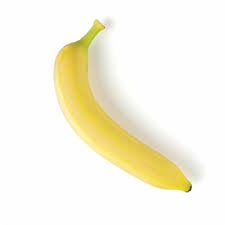

:max_bytes(150000):strip_icc()/ar-new-banana-adobe-ar-4x3-d8f0871e12214350be7ae5575eea4eed.jpg)
Some information about bananas

Bananas are an excellent source of potassium, which helps regulate blood pressure, maintain fluid balance, and support muscle and nerve function.
They contain dietary fiber, especially pectin, which aids digestion and helps regulate bowel movements.
Bananas provide natural sugars (glucose, fructose, and sucrose) along with fiber, making them a great quick energy source without a blood sugar spike.
The fiber, potassium, and antioxidants in bananas contribute to heart health by helping reduce the risk of cardiovascular disease.
"Time flies like an arrow; fruit flies like a banana."
— Groucho Marx
Eat your bananas people!
Press the button on the right to learn more about bananas!